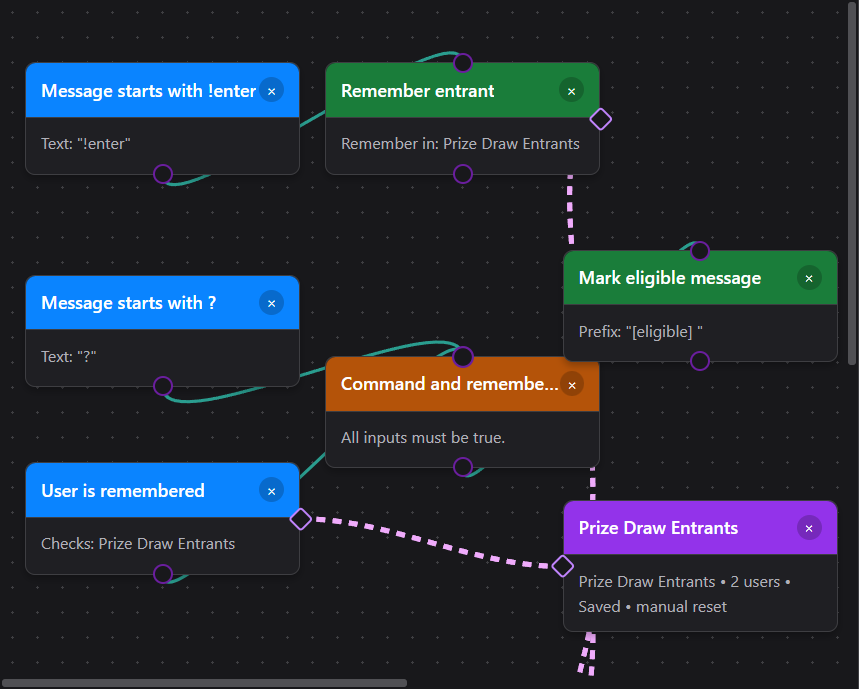
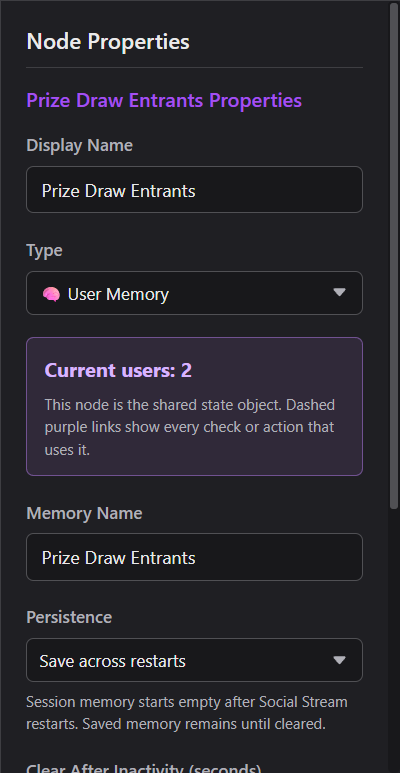
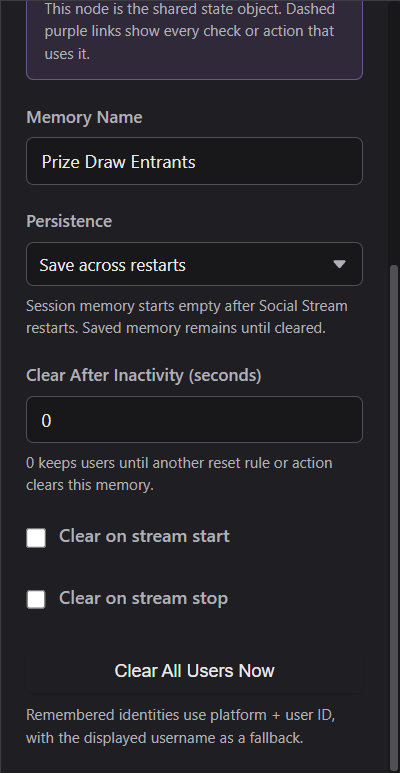
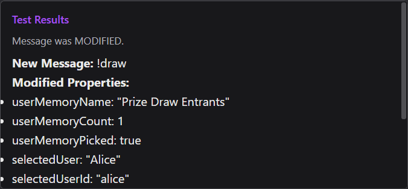

一個具名記憶，多種工具
一個 使用者記憶（User Memory） 狀態節點擁有一組隔離的人員。每個 Remember、Forget、Check、Draw 或 Clear 節點都選擇該狀態節點。需要單獨清單時，再建立一個 User Memory 節點，例如，一個用於「按讚過直播」，另一個用於「參加了贈品抽獎」。
藍綠色實線：接下來執行此事件
紫色虛線：此節點使用該記憶
將紫色小側邊菱形拖到 User Memory 節點上，或在節點屬性中依名稱選擇記憶。動作在內部儲存狀態節點的 ID。選擇記憶會醒目顯示所有連結動作，刪除它會在中斷這些連結前發出警告。

進行設定
- 拖曳 狀態節點 → 使用者記憶（State Nodes → User Memory） 至畫布上。
- 根據其管理的清單為它命名，例如 Heart Me 合格使用者（Heart Me Eligible）, 按讚過直播（Liked Stream），或 抽獎參加者（Prize Draw Entrants）.
- 選擇 此次應用程式工作階段 或 跨重新啟動儲存（Save across restarts）.
- 新增所需的檢查和動作，然後使用側面的菱形或下拉式選單，將每個節點連結至具名記憶。
- 使用藍綠色連線連接一般事件路徑，並使用 測試流程（Test Flow） 在開播前使用兩個不同的使用者名稱。
可用動作
| 節點 | 功能 |
|---|---|
| 記住使用者（Remember User） | 僅新增目前事件的使用者一次。重複參加會增加該使用者的參加次數，不會新增重複抽獎項目。 |
| 使用者已被記住（User Is Remembered） | 當目前訊息屬於所選記憶中的某人時，傳回 true 的觸發條件/檢查。 |
| 忘記使用者（Forget User） | 僅移除目前事件的使用者。 |
| 隨機選擇使用者（Pick Random User） | 選擇一名不重複的已記憶使用者。可以選擇移除得獎者，使其無法再次得獎。 |
| 清除所有使用者（Clear All Users） | 僅清空所選的 User Memory 物件。 |
| 重設狀態節點（Reset State Node） | 當 User Memory 是所選重設目標時，也會清空該記憶。 |

身分規則： 使用者以平台加使用者 ID 為鍵。顯示的使用者名稱僅作為備援值。沒有使用者身分的匿名或彙總事件會安全地忽略。
實用方案
TikTok Heart Me 或 Team Member → ? TTS
使用禮物事件記住傳送者；不要試圖將單一禮物列變成永久「會員」角色。
TikTok gift event + “Heart Me” match → AND → Remember User ···→ [Heart Me Eligible]
? command + TikTok source + (TikTok Team Member OR User Is Remembered) → AND → Speak Text
? command + NOT TikTok source → AND ────────────────────────────────→ Speak Text
- 對於 TikTok Team/Fan 狀態，選擇 User Role → TikTok Team Member。它直接讀取傳入的 TikTok 徽章/等級資料；不需要 Main Chat Overlay 的「treat as members」顯示設定。
- 禮物承載資料因擷取模式而異。一種常見設定為 Event Type → Other: gift 加上 Message Contains: Heart Me。在 Test Flow/Event Reference 中確認擷取的列，並比對來源提供的最明確欄位。
- 兩個分支仍然都要求開頭的
?，這樣其他平台允許所有人發聲，而 TikTok 仍受限制。
記住按讚或參加過的人
Event Type → Other: liked → Remember User ···→ [Liked Stream]
當擷取的按讚/參加事件指明某個使用者時，此功能有效。彙總按讚數量更新不能識別個人，因此無法記憶。若要獨立檢查或抽獎，請為每種參加類型使用單獨的記憶。
每人一份資格的抽獎
Message Starts With !enter → Remember User ···→ [Prize Draw Entrants]
Moderator + Message Starts With !draw → AND → Pick Random User ···→ [Prize Draw Entrants]
Moderator + Message Starts With !resetdraw → AND → Clear All Users ···→ [Prize Draw Entrants]
啟用 移除選中的使用者（Remove selected user） 當得獎者不應被重複抽中時。在公開直播中，請使用版主、管理員或精確使用者檢查來保護抽獎/重設命令。
重設和持續儲存
手動
使用 立即清除所有使用者（Clear All Users Now） 在建立/測試期間，在記憶屬性中使用。
從流程中
使用 清除所有使用者（Clear All Users） 或通用的 重設狀態節點（Reset State Node），選擇確切的記憶。
自動
在不活躍、直播開始或直播停止時清除。值為 0 會停用不活躍重設。
跨重新啟動
工作階段記憶在應用程式啟動時為空。儲存的記憶會重新載入，直到該特定記憶遭清除。

「清除全部」有範圍限制： 它指所選記憶內的所有使用者，而不是全部 Event Flow 狀態、所有抽獎或 Social Stream Ninja 中的每項記憶。
使用抽獎和參加輸出
記憶動作向訊息加入欄位，以便下游 Show Text、Send Message、webhook 或自訂動作使用。
| 欄位 | 含義 |
|---|---|
userMemoryName | 所選記憶的名稱。 |
userMemoryCount | 目前記住的不重複使用者。 |
userMemoryAdded | 僅當 Remember User 新增了新的不重複使用者時為 true。 |
userMemoryEntryCount | 該人參加了多少次。 |
selectedUser | 抽中使用者的顯示名稱。 |
selectedUserId, selectedUserSource | 抽中使用者的穩定 ID 和平台。 |
selectedUserParticipationCount | 得獎者記錄的參加次數。 |
selectedUserReason | Remember User 儲存的最新原因範本。 |
selectedUserRemoved | 抽獎是否移除了選中的得獎者。 |

疑難排解
| 缺少虛線 | 選擇動作並選取一個 User Memory 目標，或將其紫色側邊菱形拖至記憶中心。 |
|---|---|
| 同一個人出現兩次 | 檢查事件是否來自不同平台。平台 + 使用者 ID 會刻意建立不同身分。 |
| 按讚沒有新增任何人 | 該事件可能沒有使用者身分。檢查事件承載資料；彙總計數無法成為具名參加者。 |
| 儲存的記憶又回來了 | 對該記憶使用 Clear All Users。變更流程或清除另一個記憶不會抹除它。 |
| 任何人都能執行抽獎/重設命令 | 在動作之前的 AND 閘中加入 User Role: moderator/admin（或精確的主持使用者檢查）。 |